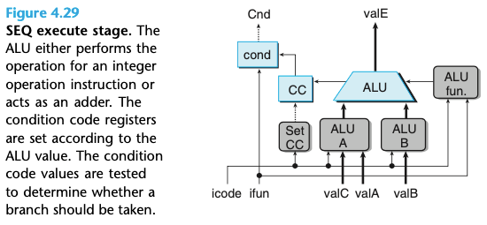

Chapter 04. 프로세서 구조
- 4.1 Y86-64 인스트럭션 집합 구조
- 4.2 논리 설계와 하드웨어 제어 언어 HCL
- 4.3 순차적sequential Y86-64 구현
4.3 순차적sequential Y86-64 구현
- SEQ : sequential 프로세서를 의미
- 매 클럭 사이클에 SEQ는 한 개의 완전한 인스트럭션을 처리하는 데 필요한 모든 단계를 수행한다.
- SEQ를 개발하는 목적은 효율적인 파이프라인 프로세서를 만들려는 우리의 최종목표로 가는 첫 단계이다.
4.3.4 SEQ 단계의 구현
- SEQ를 구현하는 데 필요한 제어로직 블록을 위한 HCL작성방법을 설명한다.
- 여러가지 인스트럭션 코드, 함수코드, 레지스트 이름, ALU 연산, 상태코드 등을 위한 상수 값뿐만 아니라 여러가지 하드웨어 신호의 이름이 포함된다.
- 위의 표는 HCL 문장에 사용된 상수 값들이다.
선입 단계
- 선입 단계는 인스트럭션 메모리 하드웨어 유닛을 포함한다.
- 유닛은 PC를 첫 바이트(0번 바이트)의 주소로 사용해서 메모리로부터 한 번에 10바이트를 읽어들인다.
- 이 바이트는 인스트럭션 바이트로 해석되고, 두 개의 4비트 값으로 나누어진다.(“Split”이라고 표시된 유닛에 의해 icode와 ifun으로 나뉜다.)
- icode 값에 따라 세 개의 1비트 신호를 계산할 수 있다.
- instr_valid: 이 신호는 부정 인스트럭션을 검출하기 위해 사용된다.
- need_regids: 레지스터 지정 바이트를 포함하는가
- need_valC: 상수 워드를 포함하는가
- instr_valid, imem_error 신호(인스트럭션 주소가 범위를 벗어날 때 만들어지는)는 메모리 단계에서 상태코드를 만들기 위해 사용된다.
- need_regids를 위한 HCL 표현은 icode 값이 레지스터 지정자 바이트를 갖는 인스트럭션인지를 결정한다.
bool need_regids =
icode in { IRRMOVQ, IOPQ, IPUSHQ, IPOPQ,
IIRMOVQ, IRMMOVQ, IMRMOVQ };- 인스트럭션 메모리에서 읽은 나머지 바이트는 레지스터 지정자와 상수 워드들이다.
- Align 이라고 이름 붙인 하드웨어 유닛이 레지스터 필드들과 상수 워드에 대해 처리작업을 수행한다.
- 계산된 need_regids가 1이면, 레지스터 지정자 rA와 rB로 나누어진다.
- 상수 워드 valC도 만든다.
- PC 증가 하드웨어 유닛은 현재의 PC 값, need_regids, need_ValC에 따라 valP를 만든다. (p+1+r+8i)
해동과 재기록 단계
- SEQ에서 해독과 재기록 단계 모두를 구현하는 로직의 상세한 모습을 보여준다.
- 해동과 재기록 단계 모두 레지스터 파일에 접근하기 때문이다.
- 레지스터 파일은 네 개의 포트를 가지고 있다.
- 두 개의 동시 읽기(포트 A와 B), 두 개의 동시 쓰기(포트 E와 M)
- 각 포트는 한 개의 주소 연결과 데이터 연결을 모두 갖는다.
- 주소 연결은 레지스터 ID, 데이터 연결은 레지스터 파일의 출력 워드 이거나 입력워드로 사용
- 두 개의 읽기 포트는 주소 입력 srcA와 srcB를 가진다.
- 두 개의 쓰기 포트는 dstE와 dstM을 주소 입력으로 갖느다.
- 네 개의 블록은 인스트럭션 코드 icode, 레지스터 지정자 rA, rB, 실행 단계에서 계산된 조건신호 Cnd에 기초하여 네 개의 레지스터 ID를 만들어 낸다.
- 레지스터 ID dstE는 쓰기 포트 E를 위한 목적지 레지스터를 나타내며 계싼된 valE가 저장된다.
실행 단계

- 실행 단계는 산술/논리 유닛(ALU)을 포함한다.
- 이 유닛은 ADD, SUBTRACT, AND, EXCLUSIVE-OR를 입력 aluA, aluB에 alufun 신호의 설정에 따라 실행한다.
- ALU가 대부분의 경우에 덧셈기로 사용된다.
- OPq 인스트럭션에 대해서는 인스트럭션의 ifun 필드에 인코딩된 연산을 사용해야 한다.
- 실행 단계는 조건코드 레지스터를 포함한다.
- 조건코드 레지스터가 갱신되어야 할지 여부는 제어하는 set_cc 신호를 생성한다.
- “cond”로 명명된 하드웨어 유닛은 조건부 분기나 데이터 이동이 일어나야 할지를 결정하기 위한 조건코드들과 함수코드의 조합을 사용한다.
메모리 단계
- 메모리 단계는 프로그램 데이터를 읽거나 쓰는 일을 수행한다.
- 두 개의 제어 블록이 메모리주소와 메모리 입력 데이터(쓰기 연산을 위한)를 위한 값을 만들어낸다.
- 메모리 단계에서 마지막 기능은 icode, imem_error, 선입 단계에서 만들어진 instr_valid, 데이터 메모리에서 만든 dmem_error 신호에 따라 인스트럭션 실행에서 결정되는 상태코드 Stat을 계산하는 것이다.
PC 갱신 단계
- SEQ의 최종 단계는 새로운 프로그램 카운터 값을 생성하는 것이다.
- 새로운 PC 값은 인스트럭션 타입과 분기를 택할지 여부에 따라 valC, valM, valP가 될 수 있다.
SEQ 현황 조사
- 여러 인스트럭션을 통일된 흐름으로 실행하기 위해 필요한 단계를 구성하면서 프로세서 전체를 적은 수의 여러 하드웨어 유닛들과 계산을 순서화하기 위한 한 개이의 클럭으로 구현할 수 있다.
- SEQ에서 유일한 문제는 매우 느리다.
- 그 이유는 각 유닛들이 전체 클럭 사이클의 일부 동안만 사용되기 때문이다.
- 그렇기 때문에 파이프라인을 사용해서 보다 좋은 성능을 얻을 수 있다.
프로세서의 구조를 자세히 살펴보았는데, 굉장히 이해하기 어려운 부분이 많았다. 이번 챕터는 자주 보고 다른 자료도 더 찾아봐야겠다.